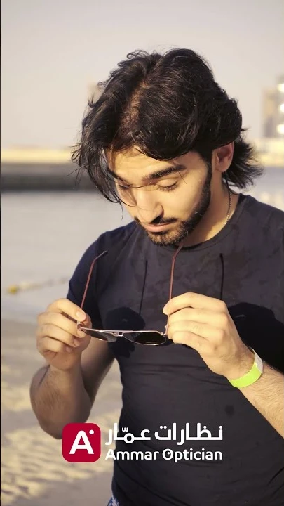
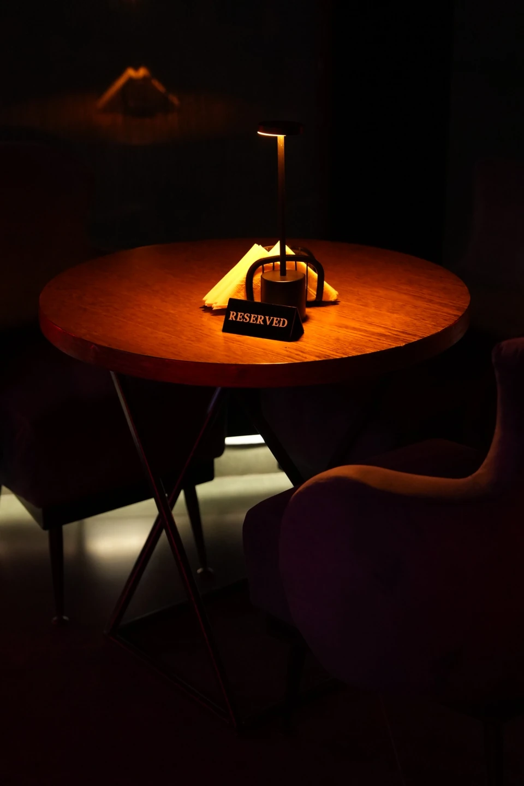
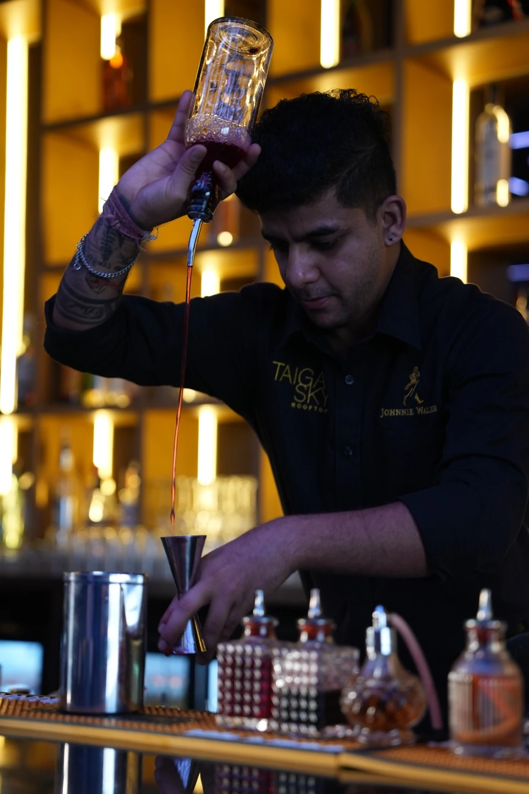
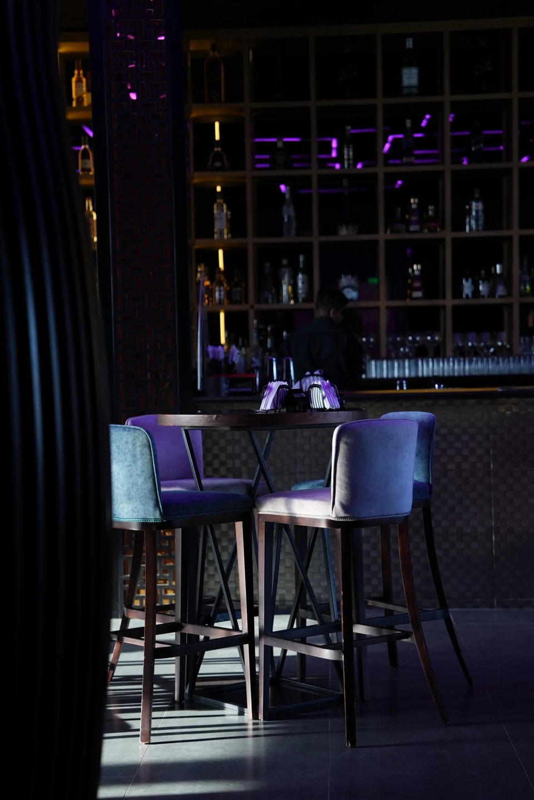
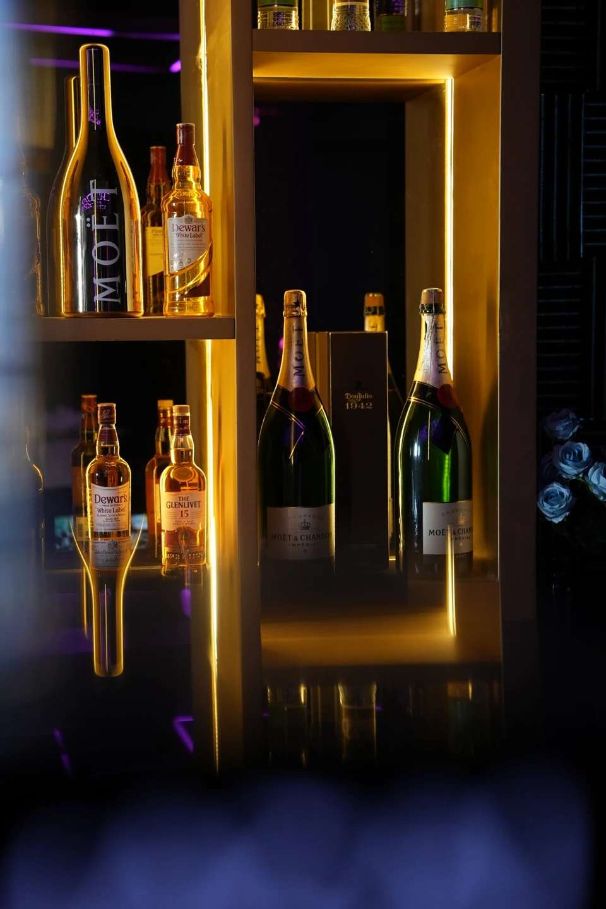

Solo Creator - 3D Animation
Playthings
An independent 3D animated short focusing on suspense and stylized storytelling.
Independent filmmaker / 3D & motion designer
3D animator. Film director. Video editor.
Bringing live action and digital worlds together, from Bahrain.
The 2026 edit
A little live action.
A little digital imagination.
All in one frame.
01 / Selected work
From independent films to commercial visuals. A selection of stories, simulations, and worlds brought to life.
An independent 3D animated short focusing on suspense and stylized storytelling.

A live-action Bahraini adaptation inspired by Little Red Riding Hood, emphasizing atmospheric tension and visual storytelling.

A documentary biopic detailing a Bahraini artist's journey from art school to becoming an art educator.

Highly realistic simulation of optical vision impairments combining Blender and After Effects.

A split-screen technical visualization comparing optical conditions side-by-side.

Integrating 3D models into real-world live-action footage for dynamic visual effects.

High-end commercial videography tailored for engaging brand marketing campaigns.

An idling deer in an atmospheric Blender environment, exploring lighting and mood.
Directed, animated & edited in Bahrain.
02 / Photography
THE DIRECTOR’S CUT / STILL LIFE, NIGHT LIFESome stories
don’t need motion.
.png)
.png)
.png)
.png)
.png)




03 / The person behind the work

I'm Tareq, a Film and Animation graduate from Bahrain Polytechnic, working across 3D animation, video editing, and motion graphics.
My work moves between directing digital content, building animated worlds, and creating commercial marketing campaigns. From scene creation and lighting to the final edit, I bring the visual and technical sides of storytelling together.
The practice
3D animation
Motion graphics
3D visualization
Directing & storytelling
Cinematography & lighting
Video editing & color grading
Sound editing
Social media content
Commercial videography
Product photography
Customer relations
Ammar Optician, Ammar Center & Rosa Belle
Coordinating social media marketing, content schedules, and design assets across commercial eyewear and optician brands. Producing commercial videography, motion graphics, and product photography.
Managed promotional launches and social media campaigns for new branches, including the 12th branch at Seef and the 13th branch at Bahrain Mall.
Direct and coordinate a professional creative team to maintain a visually consistent and engaging brand presence.
Handle retail customer service and complaint resolution, liaising across multiple branches to address issues and support client satisfaction.
Bahrain Polytechnic
.png){kind=link}
.png){kind=link}
.png){kind=link}
.png){kind=link}